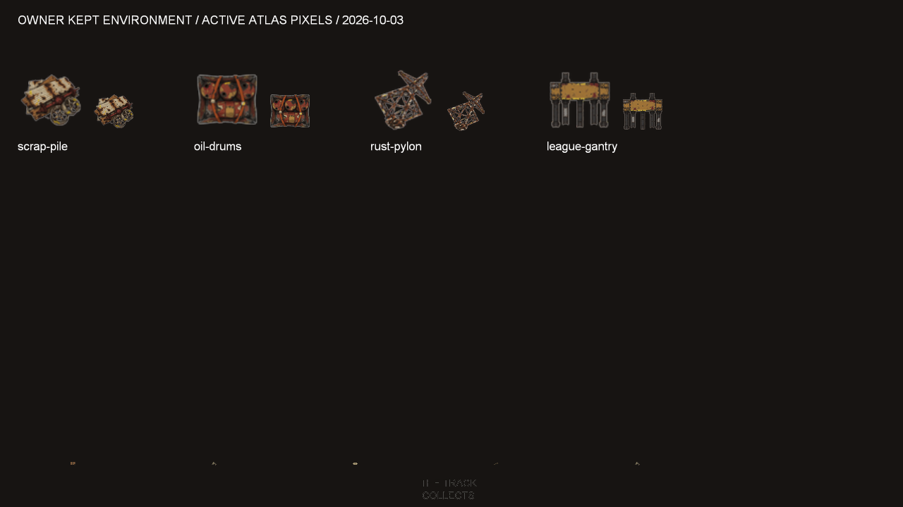
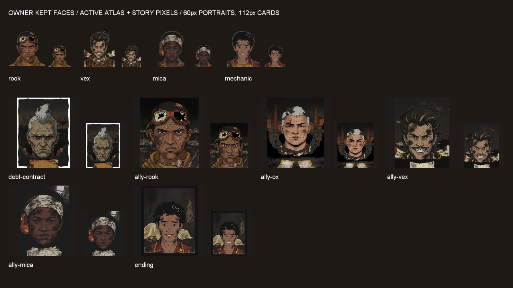

environment/scrap-pile

Active, exact delivered export.
Approved hashes
Source: f507b82f8a10612f3d6b0d15796a0b1b865db4ab7086e50a1d16a8f33da10c85
Export: 55829cb638f020126f9e5d071439ec0da7d31764356c1305c3b1f176a6e0b942
14 Keep / 21 Reject. No replacement generation, edits or upscaling. Four props, four portraits and six story scenes are kept as delivered. Mechanic also supplies the approved garage portrait texture.
The owner flagged degraded resolution in the altered environment candidates; the four kept 64px exports are used at their delivered quality. The rejected candidates remain in the historical review archive and are absent from the active catalog and atlas regions.
Original Ox, Relay and Marrow remain active. Seizure and rig reveal have their exact pre-rework files restored; their earlier unapproved status means the game uses procedural cards. The retained dune is removed; its core drag footprint remains and is drawn procedurally.
All 60 remaining original world cells and all 37 original UI cells retain their visible pixels. Atlas residency stays 31.25 MiB declared with reserve / 18.75 MiB in desktop GL; story menu bound is 1,283,072 bytes. No Stick/performance claim.
Active, exact delivered export.
Source: f507b82f8a10612f3d6b0d15796a0b1b865db4ab7086e50a1d16a8f33da10c85
Export: 55829cb638f020126f9e5d071439ec0da7d31764356c1305c3b1f176a6e0b942

Active, exact delivered export.
Source: 4d9627caf254043938e8b88f4a0475858b3159e9c58a9a68217578350fbe7863
Export: 60944050ba18c0d07f910c7577dc7dd08e0ef07e6ae82007ff47e96878e50b39

Active, exact delivered export.
Source: c68f9958091cb92f29648065102987ed4d90244acec7412754fca33f79fe9946
Export: 9337984834c33eab491639886667e769393bf1f87440deeafb64170a5ca5adc7

Active, exact delivered export.
Source: db55b5c7fc40d8747060eb10769d51f8c85252f0d946961572ed17c0da814980
Export: 188740ee5829dadeb5b1dda1622e23a32d4bf47cc02a7966b54e55088b518fae

Active, exact delivered export.
Source: 24b732cd26528ab145eea46ab204af39c7590a35c13e16c7a5c67a7d263594a8
Export: fa43631a5344a0087e1ccc62056cb594d2418c0406e74a8e61562faef373e1a5

Active, exact delivered export.
Source: 3bb11eb14015e230317e6f140802723d317291546f74d176dbe562e0572d1bb9
Export: befbb6136170ac1b320694fd9eb78b245072cb412cb380891a5356d91db4cc62

Active, exact delivered export.
Source: 84b732b325fcb07c309491dcf8b6767ae6b03f6302ba8ecc6142b270a9491106
Export: 51dff24b96c0f3d3ff5c5f8b1750b66ae8cdabb82aae8c74f292065a747a6706

Active, exact delivered export.
Source: 491632cfcb7cc2a7c9e5553ca4d5fdfc3b44e8d4ee9239c760d578cf3fb9cc81
Export: ab7a73dbd6a43421af3b9a287a30b0cf0fc08bb8f8032b2bc0340357070afb07

Active, exact delivered export.
Source: b8e285afe5b6290daed5e07451f9c7ac921a183da4c8072dbc87d6465a907f67
Export: eeec2c676d6cac466e780842d6f78888a02a23d49d73a41b7728687ff1a8ef88

Active, exact delivered export.
Source: 8f5312bfcd66f2e7d6411625d64bd2d02d249037117de7e682944976ce562ed5
Export: 7b90ca54d170fbb917038b4ac4bf139bc8471c100f78fb24c90b1f2b8a259767

Active, exact delivered export.
Source: bfc9dcae046b53d3a556e64571d4b7d47e2a06eb61417bf2a012f981434032ca
Export: 9ebc5650549fc7ae5c714949e82ce91076859dd2092a5983f84146c38f63600b

Active, exact delivered export.
Source: 15fc9d7f406b4d10639682c6d2d2e23b4e945946bdaeaed8bbfe6a0236c92476
Export: 2c23dc8d67a3f923faa2683584c2f662cde5b63106bd47ed0b8e121ad4044f41

Active, exact delivered export.
Source: 0653f83fb359f4fa50443845fbce2160fab51a5794cc137401895b8934229b84
Export: b6c827aa3100f88db1512a44a42b4b0840dc831e53895bd108e6d64f357c83a8

Active, exact delivered export.
Source: 0ada892adf866d51d3a3acf89a7293d09140d01c7a94caa3bc3de2307498c458
Export: bb70e94eff1cb42d023347c64711c9a09e05ddacea675a7455108c48587ff3ff
| Item | Active fallback | Excluded candidate |
|---|---|---|
| environment/derelict-crane | props/crate | rw2-env-derelict-crane-v1-a2 |
| environment/wreck-car | props/crate-metal | rw2-env-wreck-car-v1-a1 |
| environment/quarry-face | props/rock-field | rw2-env-quarry-face-v1-a2 |
| environment/slag-heap | props/rock-field | rw2-env-slag-heap-v1-a1 |
| environment/salt-crust | procedural/salt-crust | rw2-env-salt-crust-v1-a2 |
| environment/dead-brush | props/brush | rw2-env-dead-brush-v1-a1 |
| environment/league-hoarding | props/sign | rw2-env-league-hoarding-v1-a1 |
| environment/smelter-stacks | props/drum | rw2-env-smelter-stacks-v1-a2 |
| environment/sluice-gate | props/crate-metal | rw2-env-sluice-gate-v1-a1 |
| environment/dead-tree | props/dead-tree | rw2-env-dead-tree-v1-a2 |
| environment/guard-rail | props/sign | rw2-env-guard-rail-v1-a3 |
| environment/rock-fall | props/rock-field | rw2-env-rock-fall-v1-a2 |
| environment/rock-spire | props/rock-spire | rw2-env-rock-spire-v1-a2 |
| environment/tyres-scattered | props/tyres-scattered | rw2-env-tyres-scattered-v1-a1 |
| environment/tyre-wall | props/tyres | rw2-env-tyre-wall-v2-a1 |
| portraits/ox | portraits/ox | rw2-face-ox-v1-a1 |
| portraits/relay | portraits/relay | rw2-face-relay-v1-a1 |
| portraits/marrow | portraits/marrow | rw2-face-marrow-v1-a1 |
| story/car-seizure | pre-rework card; procedural until separately approved | rw2-face-car-seizure-v1-a1 |
| story/rig-reveal | pre-rework card; procedural until separately approved | rw2-reuse-rig-reveal |
| Retained natural dune | procedural dune; gameplay footprint unchanged | v4-fusion-props-soft-dune-v1-despill-v1 |
Environment lookup and residency · Portrait and story owner gates · Story load, scene release, stale/budget fallback and text layout


Complete decision and gap report · Exact owner approval ledger · Historical before/after candidates, including rejections